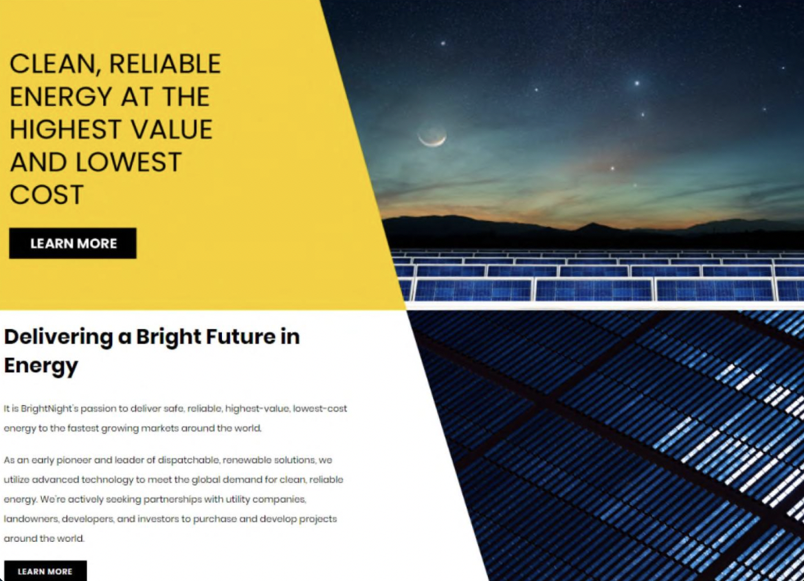
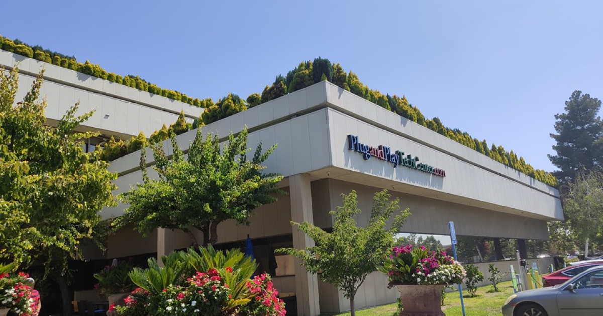
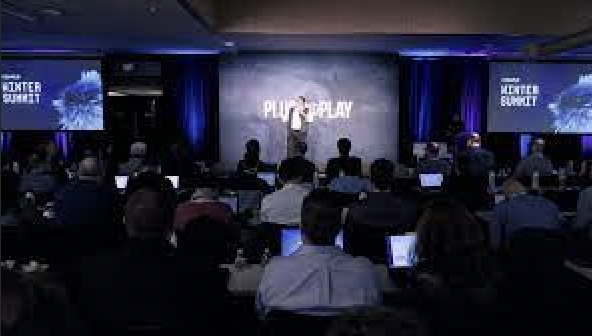
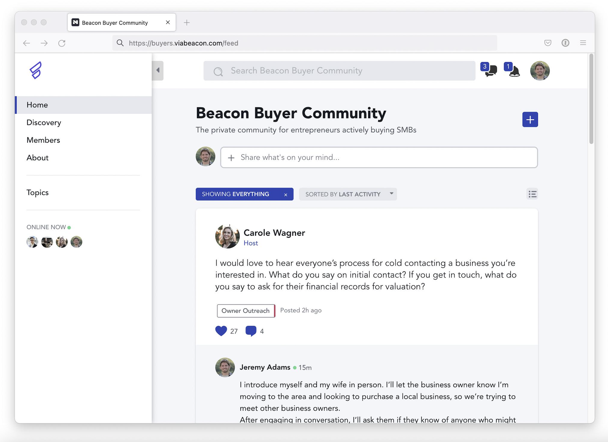

Data Analyst
This past summer I worked for an international renewable energy company known as BrightNight LLC. I worked as a Data Analyst builidng complex excel models and used SQL to analyze customers' renewable energy supply and demand for over 16,000 utility plants. I also Collaborated with sales and data analytics team to identify over 100 potential customers for future solar projects.
Investment Intern
 During first semester this year I worked at Plug and Play Tech Center as an investment analyst intern. I evaluated pitch decks and CIMS for 200+ North American, European, and Asian biotechnology, smart- technology, and financial-technology startups seeking $500k-$10m investment. I assessed company technology, total addressable market, and competitive advantage for the global VC firm. I also engaged in bi-weekly calls with investment professionals to discuss companies in various sectors, from enterprise software to consumer tech products, resulting in 10 funded equity investments.
Tech Consultant
I recently began working for a seed-stage tech startup based in Austin Texas called Beacon. This is a fintech company that helps small business owners sell their buesinesses and also serves as a useful platform for people looking to invest in a small business. Thus far I have worked as a tech consultant helping build out the marketing end of the startup.